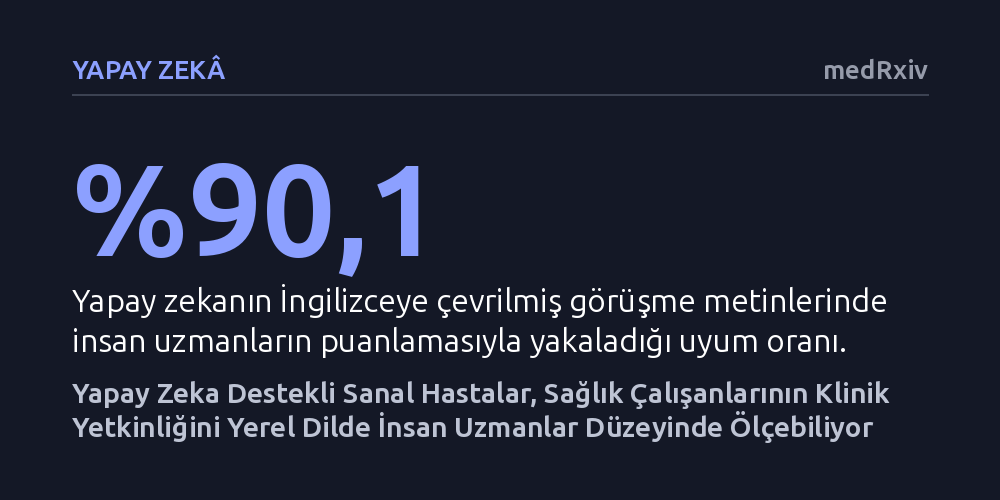

YAPAY-ZEKA · medRxiv · 2026-10-07
Araştırmacılar, Vietnam'daki birinci basamak sağlık çalışanlarının klinik yetkinliğini ölçmek için büyük dil modelleriyle çalışan sanal hasta simülasyonu geliştirdi. Yapay zekanın yerel dildeki hasta-hekim görüşmelerini puanlama başarısı, bağımsız insan uzmanların klinik değerlendirmeleriyle yaklaşık yüzde 90 oranında uyuştu.
Sağlık hizmeti kalitesini ölçmede yüksek maliyetli insan denetçilere duyulan ihtiyacı azaltarak, gelişmekte olan ülkelerde klinik yeterliliğin yerel dilde ve düşük maliyetle kitlesel olarak değerlendirilebileceğini kanıtlıyor.

Birinci basamak sağlık hizmetlerinde kalitenin artırılması, hekimlerin ve sağlık personelinin klinik yetkinliklerinin doğru ölçülmesine dayanır. Ancak özellikle gelişmekte olan ülkelerde hekimlerin gerçekte ne bildiğini ve hastaya nasıl yaklaştığını değerlendirmek hem çok pahalı hem de lojistik olarak son derece zordur. Geleneksel yöntemlerde uzman hekimler sahaya gönderilir ya da standart aktör hastalar kullanılır; bu da süreci küçük örneklemlerle sınırlı ve maliyetli bir çabaya dönüştürür.
Sağlık çalışanlarının bilgi düzeyini ölçmede uzun süredir 'klinik vinyet' adı verilen senaryo bazlı yazılı testler kullanılmaktadır. Ne var ki çoktan seçmeli veya kalıplaşmış senaryolar, gerçek bir hekim-hasta görüşmesindeki serbest soru sorma, ayırıcı tanı yürütme ve dinamik karar alma süreçlerini yansıtmakta yetersiz kalır. Araştırmacılar, bu kısıtı aşmak amacıyla büyük dil modellerinin dinamik ve serbest metinli bir sanal hasta gibi davranıp davranamayacağını sorgulamaya başladı.
Araştırma ekibi, sağlık çalışanlarının web üzerinden kendi başlarına tamamlayabilecekleri, büyük dil modeli destekli etkileşimli bir klinik senaryo yöntemi geliştirdi. İlk aşamada 9 hekimin katıldığı bir odak grup çalışmasıyla senaryoların tıbbi inandırıcılığı sınandı. Hekimler, sanal hastaların klinik gerçekçiliğine 5 üzerinden ortalama 3,78 puan vererek sistemin genel olarak başarılı ve gerçeğe yakın bir muayene ortamı sunduğunu bildirdi.
Ardından gelen doğrulama aşamasında Vietnam'da görev yapan 22 birinci basamak sağlık çalışanı, 10 farklı klinik rahatsızlığı kapsayan toplam 132 sanal hasta etkileşimini Vietnamca olarak tamamladı. Sağlık çalışanları klavye başında sanal hastaya sorular sordu, şikayetlerini dinledi ve tanı koymaya çalıştı. Üretilen 130 seans metni kayıt altına alındı; hem biri Vietnamca biri İngilizce çalışan iki uzman klinisyen hem de konuşmacı ayrımı yapabilen GPT-5.4 tabanlı yapay zeka boru hattı tarafından standart teşhis kontrol listeleriyle puanlandı.
Elde edilen sonuçlar, yapay zeka modelinin hekimlerin performansını değerlendirmede insan uzmanlara çok yakın bir başarı sergilediğini ortaya koydu. Standart değerlendirme kriterlerine göre yapılan sınıflandırmada yapay zeka, İngilizceye çevrilmiş görüşme metinlerinde insan uzmanların kodlamalarıyla yüzde 90,1 oranında uyuştu. Orijinal Vietnamca metinlerde ise bu uyum oranı yüzde 89,2 olarak ölçüldü.
Modelin ayırt etme gücünü gösteren ROC eğrisi altındaki alan (AUROC) skorları da oldukça yüksek çıktı: İngilizce çevirilerde 0,912 olan değer, orijinal Vietnamca kayıtlarda 0,922'ye ulaştı. İstatistiksel analizler, Vietnamca metinlerin madde düzeyinde İngilizceye kıyasla hafif bir üstünlük sağladığını, seans düzeyinde ise iki dil arasındaki farkın anlamsız olduğunu gösterdi. Bu bulgu, yerel dillerde yapılan klinik değerlendirmelerde araya ek bir çeviri katmanı eklemeye gerek kalmadığını doğrudan kanıtlamaktadır.
Bu çalışmanın sunduğu en somut kazanım, klinik yetkinlik ölçümünün pahalı uzman panellerine veya aktör hastalara bağımlı kalmadan geniş kitlelere ulaştırılabilmesidir. Sanal hastalar, katılımcıların önceden belirlenmiş şıkları seçmesi yerine serbest metinle soru sormasına olanak tanıyarak klasik test formatlarının yapaylığını ortadan kaldırmaktadır. Bu açık uçlu format, klinik vinyetlerin geçerliliğini korumada kritik bir rol oynamaktadır.
Ayrıca geliştirilen yöntemin açık kaynaklı olarak paylaşılması, farklı dillerdeki ve sağlık sistemlerindeki ülkelerin bu simülasyonları kendi koşullarına kolayca uyarlayabilmesine zemin hazırlamaktadır. Yöntem, sağlık personelinin eğitim ve gelişim ihtiyaçlarının yerinde ve tarafsız biçimde tespit edilmesinde düşük maliyetli, pratik bir izleme aracı olma potansiyeli taşımaktadır.